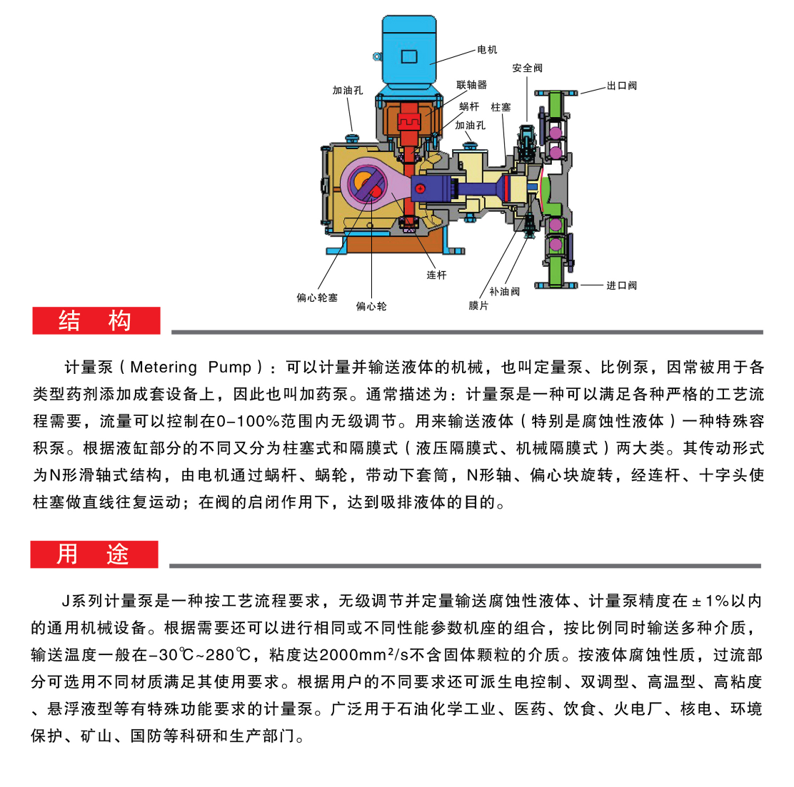
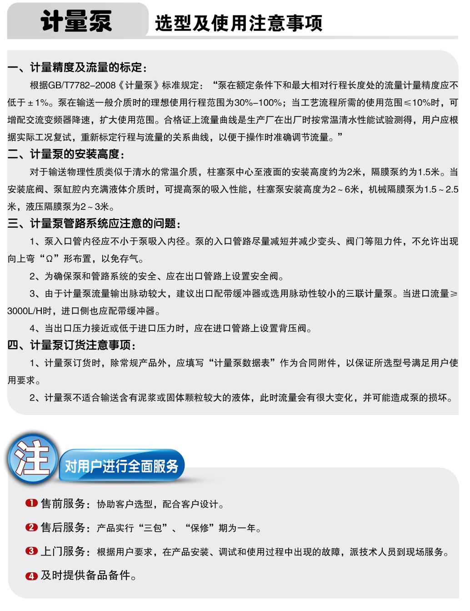
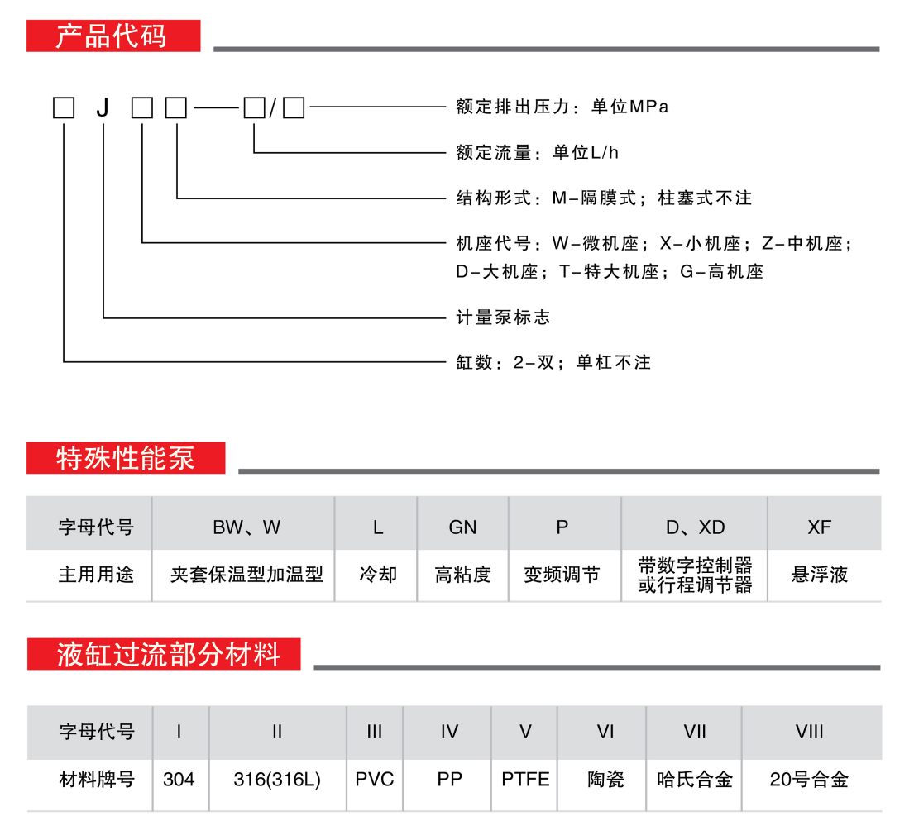
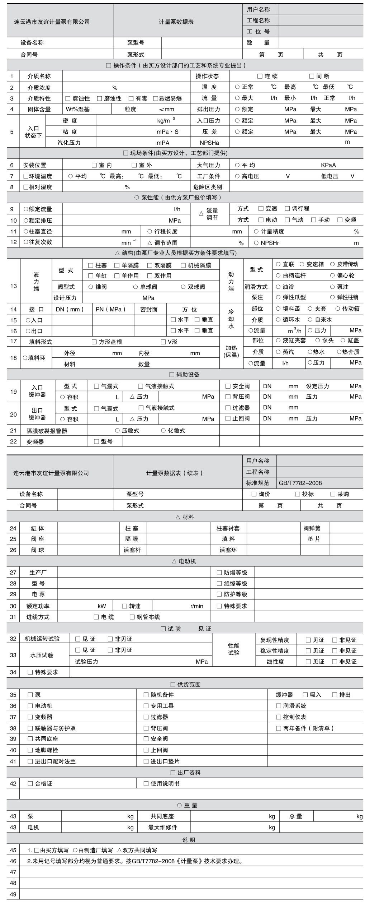
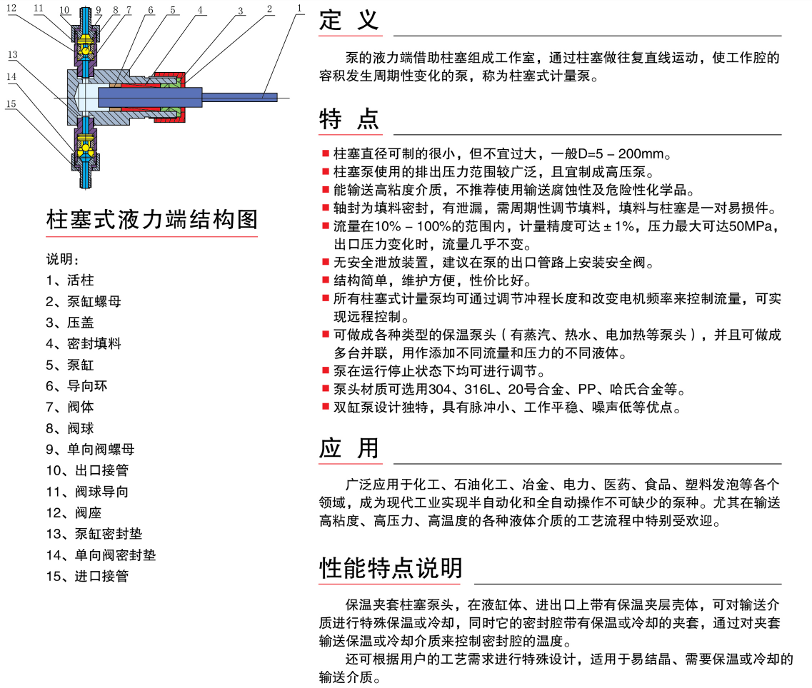
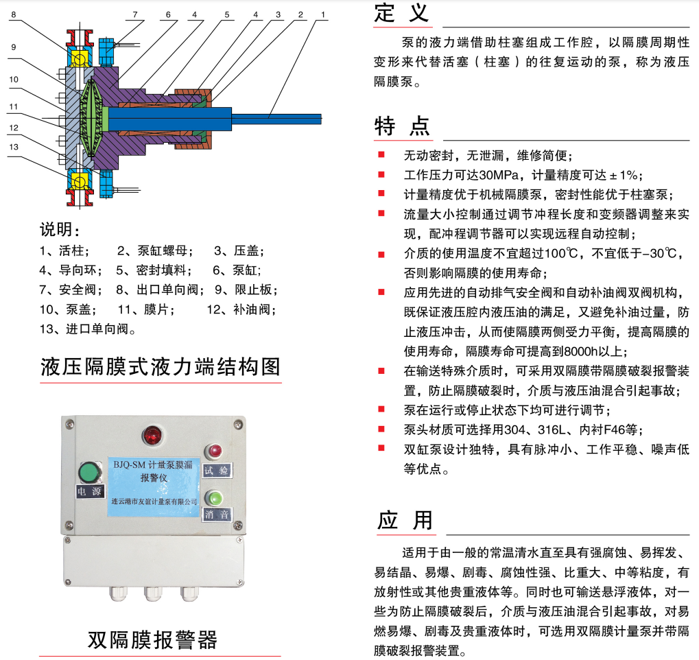
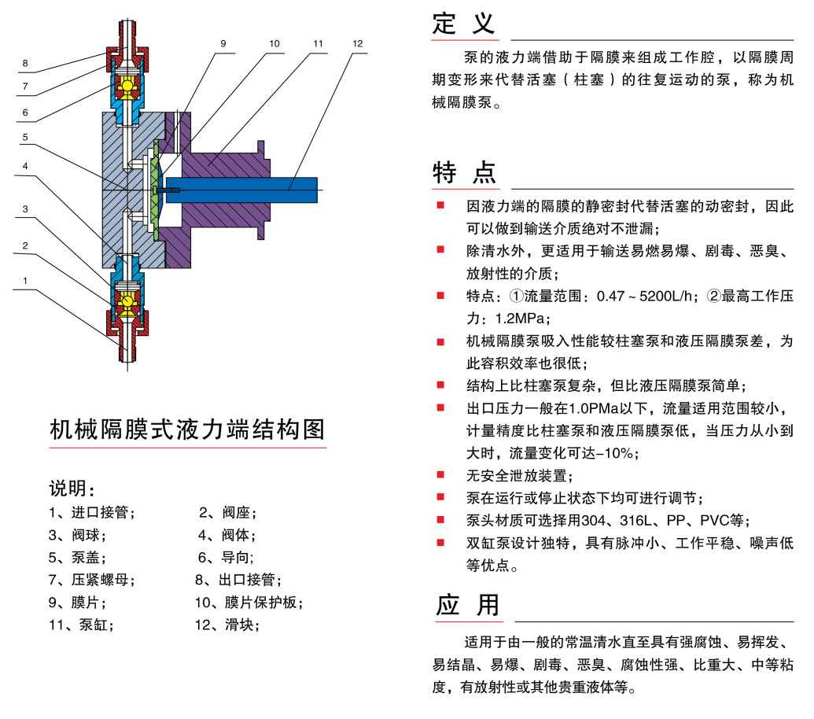

Product center
产品概述

1、 计量泵是液体输送、压力控制、流量调节和计量等多功能组合体，亦称比例泵、定量泵或可控容积泵。
2、 计量泵有柱塞式、液压隔膜式、机械隔膜式三大泵种。适用于输送温度为-30^-280=，粘度为 0.3-2000mm2/s的腐蚀性或非腐蚀性液体，计量精度在±1%以内。柱塞式计量泵具有结构简单、操作方便等 优点；隔膜式计量泵则具有绝不泄漏，安全性极高的独特优点，适宜输送各种易燃、易爆、剧毒、强腐蚀性、 强制激性、放射性或贵重特殊液体介质。
3、 计量泵又分单头泵、双头泵、串联泵三种结构形式。其中双头泵具有脉冲小、噪声低、工作平稳等 独特优点；串联泵则具有可同时输送多种不同液体介质的功能，同种规格型号、不同规格型号的泵均可串联 使用。泵的流量调节采用“N”形轴调节机构，流量可从零到最大额定流量范围内无级调节，压力也可以从 常压甚至负压到最大允许范围内任意选用，调节方便、读数直观、排量稳定、不随液体的密度、粘度的变化 而改变，且排量可在不停车状态下进行调节。计量泵广泛用于化工、制药、采矿、电力、水处理、原子能、 造纸及食品等工业部门。
4、 计量泵可选用手动调节和变频调节对流量进行控制，亦可与计算机联接，实现自动化控制。
5、 计量泵计量精确，稳定性好、精度高。随着现代化工业朝着自动化操作、远距离自动控制这一形势的 不断发展，计量泵的配套性强、适应介质（液体）广泛的优势显得特出。
6、 计量泵代替传统手工物料配比，使物料配比实现了远距离自动控制下的连续操作，并使物料配比 更加准确无误，从而提高产品质量、降低成本、改善劳动条件、提高全员劳动生产力，全面实现工艺流程 的自动化。
7、 计量泵输送量为硬特性：流量一旦调节到位后即为定值，不受排出压力的影响。
8、 耐腐蚀性强：本公司备有多种材料，用于过流部件的制造，适应各种不同性质的腐蚀介质需要。
9、 液压隔膜式计量泵是用隔膜将液力端和动力端安全隔开，介质零泄漏，适用于输送易燃、易爆、剧 毒、贵重等介质。
10、 根据用户需要，提供以计量泵为主机的成套加药装置，并可供配套的管路附件，如安全阀、缓冲 器、过滤器、背压阀、阀门等。







 联系电话
联系电话 地址
地址 传真
传真 邮箱
邮箱Copyright © 2020 连云港市友谊计量泵有限公司 All Rights Reserved.
苏ICP备19019129号